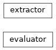

coffea.lookup_tools¶
Lookup tools
These classes enable efficient extraction of precomputed lookup tables from multiple source file formats into a uniform function-call accessor.
Classes¶
This class defines a common entry point for defining functions that extract the inputs to build lookup tables from various kinds of files. |
|
|
The evaluator class serves as a single point of extry for looking up values of histograms and other functions read in with the extractor class. |
Class Inheritance Diagram¶
